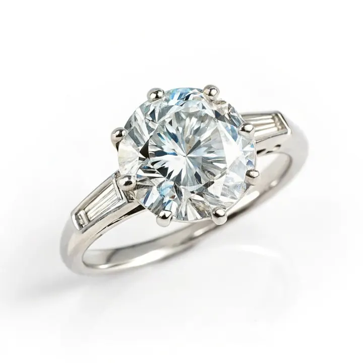

熱導儀的極限：它其實測不出「是不是鑽石」
鑽石測試筆測的不是「真假」，而是「導熱快不快」——它會把莫桑石誤判成鑽石，這支筆的極限比你想像大得多。

核心定義
熱導儀（thermal conductivity tester），俗稱「鑽石測試筆」，原理是測量寶石導熱的速度：鑽石的導熱率在天然寶石中名列前茅（約 900～2300 W/m·K），遠高於玻璃、石英、CZ 等仿品，所以「導熱快＝疑似鑽石」的邏輯成立。
但這個邏輯有個致命漏洞：莫桑石（碳化矽）導熱率與鑽石同級，熱導儀會直接把它判成「鑽石」。同樣導熱好的還有藍寶石、部分特殊材料——換句話說，測試筆只做「快篩」，做不了「判決」。
特徵與分類
| 材質 | 導熱率（約） | 測試筆反應 |
|---|---|---|
| 鑽石 | 900–2300 | 亮燈（判為鑽石） |
| 莫桑石 | 120–490（儀器會誤判） | 亮燈（誤判為鑽石） |
| CZ/玻璃/石英 | 低 | 不亮（排除） |
| 藍寶石 | 35–46 | 視機型可能誤判 |
更高階的測試儀還會加入「導電性」與「紫外螢光」感測：莫桑石有微弱導電性（天然鑽石絕緣，藍鑽除外），因此電性測試能補上導熱的盲區。但即便如此，儀器仍無法取代實驗室的光譜分析。
科學原理
導熱率是材料本質：鑽石的碳晶格是極佳聲子導體，熱量可以快速傳遞；莫桑石（碳化矽）晶格同樣高效。而玻璃、CZ 的晶格結構散熱慢——這就是測試筆「亮不亮」的物理根源。
為何莫桑石會騙過測試筆？因為儀器設計的閾值在「高導熱」區間，而莫桑石恰好落在其中。不同機型的閾值不同，部分便宜筆甚至對藍寶石也會誤報——儀器精度，決定了鑑定的下限。
鑑定與鑑別方法
- 測試筆只當「快篩」，結果不構成最終鑑定
- 遇到亮燈，先排除莫桑石：放大鏡看雙折射重影
- 用導電測試：莫桑石微導電、鑽石絕緣（藍鑽例外）
- 高價值寶石一律送實驗室：光譜＋顯微鏡才是鐵證
- 測試前清潔寶石檯面，油污會影響導熱
市場行情與保養建議
市售「鑽石測試筆」價格從數百到數千元不等，便宜機型誤判率高，不能作為購買依據。對消費者，它適合「第一線排除 CZ/玻璃」，但不該拿它「證明」一顆鑽石是真的。
旅途中用測試筆驗證小鑽石的自我保護：記住「亮燈只代表導熱好」，接著一定要做放大鏡檢查與導電測試，才不會在莫桑石上栽跟頭。
常見誤區
錯誤。莫桑石導熱接近鑽石，測試筆會誤判；部分廉價筆對藍寶石也誤報。測試筆的「是」只是「導熱好」，不是「成分是碳」。
測試筆也會漏判：螢光強或鑲嵌不當的鑽石、特殊晶向的鑽石，可能讓廉價機型「不亮」。一支筆的否定，同樣需要複查。
冷知識
比銅、鋁導熱快得多。甚至有人研究用鑽石薄膜幫晶片散熱——「鑽石散熱器」是真實的科技方向。
熱導儀問世時震驚珠寶圈——一支筆就能分辨鑽石與鋯石。如今技術進步，反而凸顯了「儀器越多、盲區越清楚」的道理。
反直覺觀點
莫桑石的崛起讓熱導儀神話破滅；鍍膜、合成寶石的出現又讓單一測試失效。鑑定科技與仿製科技，是一場永無止境的軍備競賽。
它給你「假確定感」——誤判為真鑽的莫桑石、誤判為假的真鑽，都會讓你做出錯誤交易決定。儀器是工具，知識才是最後的防線。